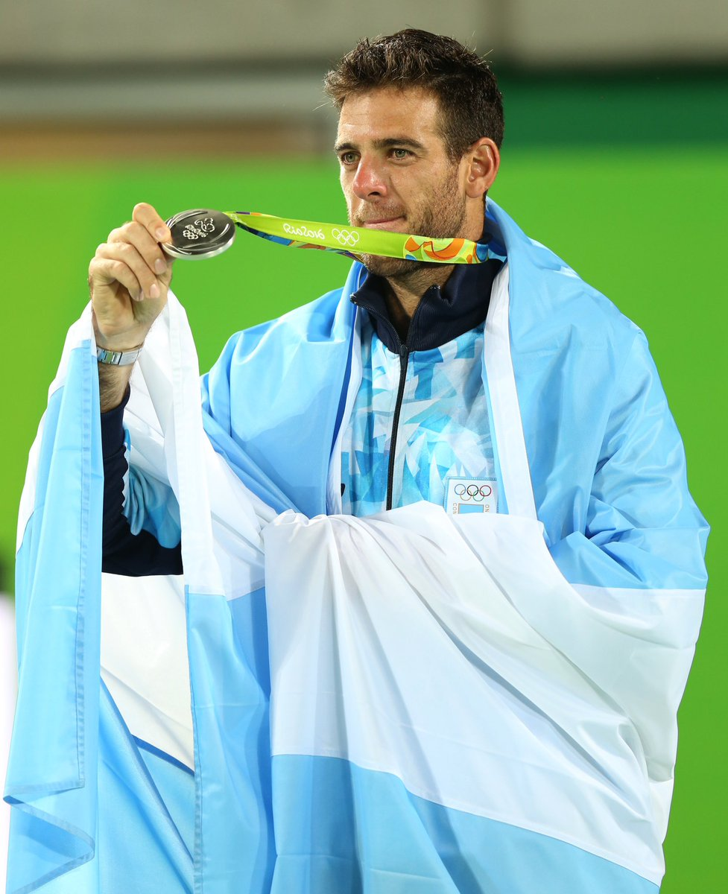

JUAN MARTÍN DEL POTRO
Menú
INICIO
BIOGRAFÍA
TORNEOS
CURRICULUM
CONTACTO
CURRICULUM
Nombre completo
Juan Martín del Potro
Nacimiento
Tandil, Argentina
Fecha de nacimiento
23 de septiembre de 1988
Nacionalidad
Argentina
Lugar de residencia
Tandil, Argentina
Edad: 32

TORNEOS DESTACADOS
Campeón US Open 2009
Finalista ATP World Tour 2009
Finalista Masters 1000 Montreal 2010
Medalla de Bronce JJ.OO. 2012
Finalista Masters 1000 Indian Wells 2013
Finalista Masters 1000 Shanghai 2013
Medalla de Plata JJ.OO. 2016
Campeón Copa Davis 2016 con Argentina
Campeón del ATP 500 de Acapulco 2018
Campeón Masters 1000 Indian Wells 2018
Finalista del US Open 2018